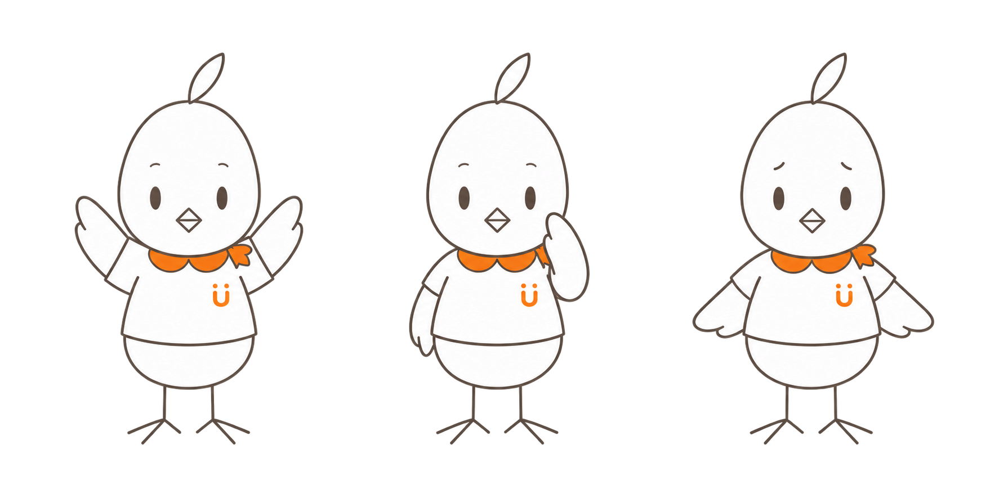
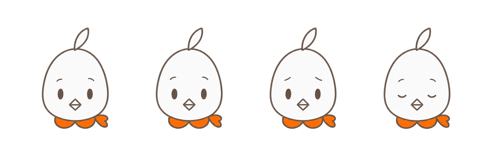
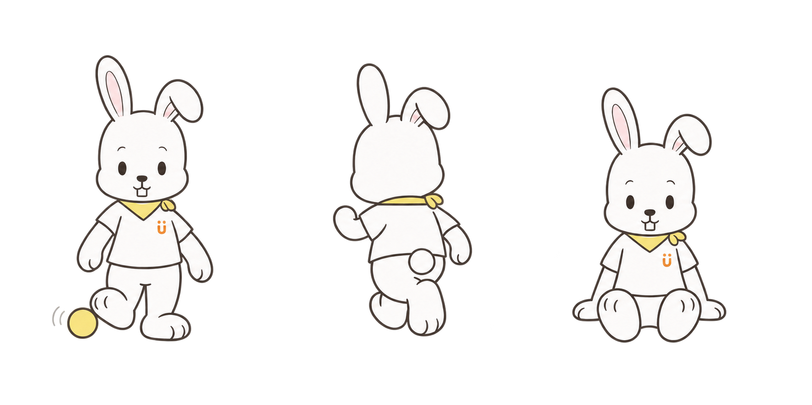
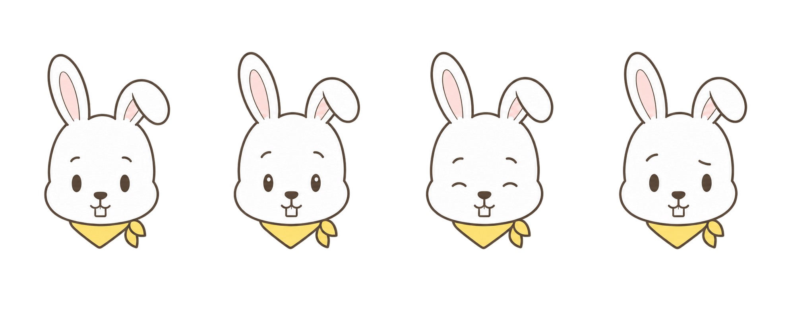
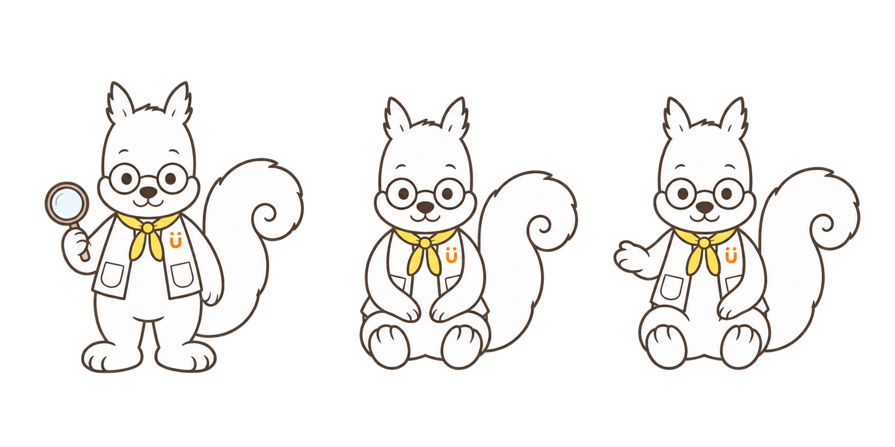
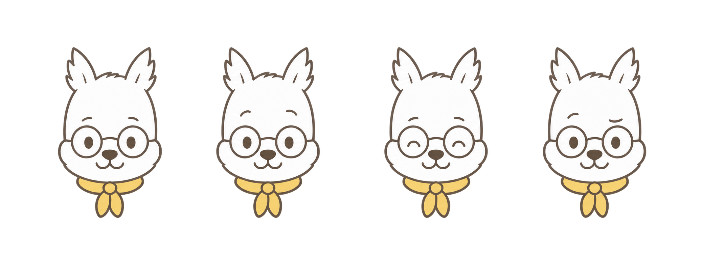
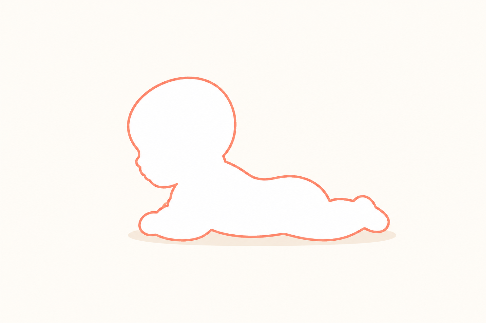

代表ポーズ
白い身体・服／茶系の線と顔／橙の丸襟状スカーフ・胸の記号

Mimo・Luke・Gen・Lumiのキャラクター設定。三面図を造形の基準に、ポーズ・表情・小物・シーンを整理します。
小さな表現に気づき、聞いて、返して、一緒に待つ。
白い身体・服／茶系の線と顔／橙の丸襟状スカーフ・胸の記号


白い服の袖・裾と胸の記号は三面図で固定。スカーフ・絵カード・ベルは小物一覧にまとめています。
発達フレームの配置例。以前作った音楽室・お話の木は「シーン設計」に掲載。
ページ上部の使用例を参照。
これは既存の発達フレームの傾向。三面図の造形仕様とは分け、他媒体へ自動で固定しない。
白背景のみ／接地線あり／最低限の室内背景の使い分け、Mimoと人物の大きさ、背景の濃さ、補助記号の用途を決める。
その子に合う量・速さ・方法を探す伴走型の応援者
飛び出す → 気づく → 相手に合わせる
白〜淡い生成りの身体・服／茶の線と顔／黄の首飾りとボール／淡いピンクの耳内側／橙の胸の記号


道具と環境を変え、できる形を増やす探偵兼発明家
観察 → まず試す → 失敗から選び直す
白い毛・ベスト／灰茶の線／濃茶の眼鏡と顔／淡い黄のスカーフ／橙の胸の記号


前後関係を整理し、複数の仮説を比べる分析者
心配する → 問いに変える → 前後を一緒に確かめる
代表ポーズ：今回は保留。
Mimo・Luke・Gen・Lumi、それぞれ3点。首飾りは結び・端を含めて1点として数えます。
キャラクターごとの小物を単体で整理。身につける位置と形は三面図を参照します。
橙の丸い2片＋短い片結び。本人の識別に使う。
ことば以外の方法でも、選んで伝えられる。
音を鳴らす・止める・待つ、のやりとりに使う。
細い黄色の帯と短い2本の端。
細い丸フレーム。原図の形と掛け位置を維持する。
布・ブラシ・トングをまとめる。箱一式で1点、場面では必要な物だけ出す。
黄色い短い三角形。首飾り一式で1点。
転がす・渡す・蹴るなど、参加の方法を変えられる。
上る・座る・支える場面の足場に使う。
小さな紫系の蝶ネクタイ。首飾りとして1点。
出来事の前・途中・後を並べて確かめる。3枚一組で1点。
出来事の時間や、待つ間を共有する。
単体図：内蔵image_genで作成。
以前のbackground資料を、Mimo・Luke・Gen・Lumiの4つの場所に整理。
4つの場所に共通の画風を適用。部屋の役割と昼夜の違いを保ち、線・描き込み・影をそろえています。
温かい木と植物、丸みのある形、滑らかな淡い色面。輪郭は素材になじむ細い色線とし、影は控えめに。木目・布・葉の細部を減らし、中央は活動のために空けます。Lumiの青紫は夜の光として残します。
聞く・伝える・続きを待つ
触る・試す・道具を変える
動く・挑戦する・休む
前後を並べる・比べる・考える
背景の目印は周囲に寄せ、中央に対話・活動の余白を残す。動物の持ち物3点と、部屋の設備は別に管理する。白背景の発達フレームと、部屋全体を描く背景は用途を分ける。
場所の役割：世界・空間の物語マップ。画像：outputs/backgrounds/chat/。構図・配色の説明は今回の画像観察による整理で、固定済みの数値仕様ではありません。
顔を描かず、手足・姿勢・相手との距離で行動を伝える。

うつぶせ。大きな頭と短く丸い身体。
約3.1頭身。丸い胴と、少しふっくらした腕・脚。
約3.2頭身。丸みを残し、胴と手足を少し長めに。
描画用の体格分類です。年齢・身長・発達の基準値ではありません。赤ちゃんはうつぶせを基本見本にし、幼児2型は立位で比較しています。BとCは足元をそろえ、BをCの約8割の高さで表示しています。これは比較用の表示比率で、実際の年齢別身長を示すものではありません。
線：子どもは外線4px・内線3px。大人は外線3px・内線2.5px。丸い線端・角、不透明度100%。
塗り：人物は白 #FFFFFF、背景は暖かな白 #FFFCF7。
影：#EEDCC6・35%。薄い接地影として独立させる。
質感：滑らかな曲線＋ごく軽い粒子感。線幅の揺れは±10%以内を目安に。
1536×1024pxの場面原稿を基準に、役割ごとの線幅を統一。50%書き出しでは子ども2／1.5px、大人1.5／1.25px。小サイズでは不要な内線を省略します。
これからの制作・修正に使う基準です。既存の生成画像は数値一致を未確認。
姿勢・手の向き・距離で、子どもへの関わりを伝える。
線：子どもは外線4px・内線3px。大人は外線3px・内線2.5px。丸い線端・角、不透明度100%。
塗り：人物は白 #FFFFFF、背景は暖かな白 #FFFCF7。
影：#EEDCC6・35%。薄い接地影として独立させる。
質感：滑らかな曲線＋ごく軽い粒子感。線幅の揺れは±10%以内を目安に。
1536×1024pxの場面原稿を基準に、役割ごとの線幅を統一。50%書き出しでは子ども2／1.5px、大人1.5／1.25px。小サイズでは不要な内線を省略します。
これからの制作・修正に使う基準です。既存の生成画像は数値一致を未確認。
正面・側面を基に、関わる姿勢を4種類へ展開。淡いコーラルの線、顔の内側を省略する表現、長袖・長ズボンを共通にしています。
12分類・164項目。P0＝個体を決める／P1＝立体と衣装／P2＝演技と用途／P3＝納品と検証。不要な項目は「対象外」として理由を残します。
| 固定する | 動かせる | 別途決める |
|---|---|---|
| 採用した骨格比率、顔の基準位置、部位数、結び側、ロゴ原稿、色の役割、人物像の核 | ポーズ、視線、まばたき、規定内の感情、場面の持ち物、相手との距離、画面内の全体縮尺 | 耳・冠羽・翼・尾の可動範囲、開口上限、衣替え、遠近による見え方、小サイズで省略する線 |
関節を動かしたり遠近が付いたりすれば、見かけの全高は変わります。立位のピクセル高を全ポーズへ強制せず、同じ骨格・部位比率を保ちます。形を決めたあとに色と線を合わせます。
今回ユーザーが指定した原図を最優先にします。以前の文章、試作、実用場面が原図と違うときは原図へ戻します。添付1の服・小物と添付2の寸法は用途別に参照し、両者の小物状態を合成しません。未掲載の演技だけを追加設計します。
各キャラにつき、①採用正面＋寸法 ②三面図＋45度 ③顔と表情 ④ポーズと接触 ⑤服・小物・配色 ⑥NG例と小サイズ見本をそろえます。見せるための一枚ボードに加え、制作に渡す個別画像と固定設定を同じ版番号で保管します。
生成時の固定文：［キャラID・版］の採用正面／三面図を使用。［固定比率・顔・部位・服・小物・線・色］を維持。今回変えるのは［動詞・視線・道具・相手との距離・構図］のみ。［禁止差分］を追加しない。未承認の過去案を混ぜない。